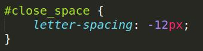
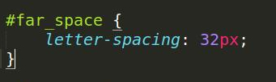
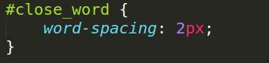
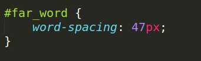
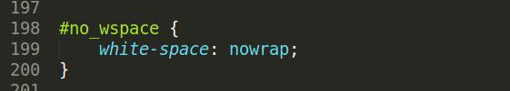
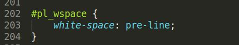
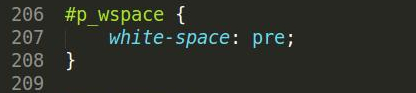
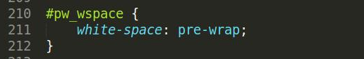
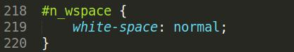
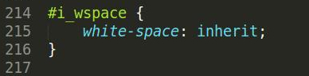

one cool tHing that you CAn do with text is cHANGE iT'S CAPITAliZATIOn style. in fact, you can transform IT TO BE ALL uppercase, alL LOWERCASe, or capITALIze the fiRst letTER of eaCh word. it's perfect if wanT TO MaKE SUre that you reAlLY do have all the FIRST LEtters capITALIzed. oR if you're laZY and don't like hitting the shit key any more than you need to.
one cool tHing that you CAn do with text is cHANGE iT'S CAPITAliZATIOn style. in fact, you can transform IT TO BE ALL uppercase, alL LOWERCASe, or capITALIze the fiRst letTER of eaCh word. it's perfect if wanT TO MaKE SUre that you reAlLY do have all the FIRST LEtters capITALIzed. oR if you're laZY and don't like hitting the shit key any more than you need to.
one cool tHing that you CAn do with text is cHANGE iT'S CAPITAliZATIOn style. in fact, you can transform IT TO BE ALL uppercase, alL LOWERCASe, or capITALIze the fiRst letTER of eaCh word. it's perfect if wanT TO MaKE SUre that you reAlLY do have all the FIRST LEtters capITALIzed. oR if you're laZY and don't like hitting the shit key any more than you need to.
one cool tHing that you CAn do with text is cHANGE iT'S CAPITAliZATIOn style. in fact, you can transform IT TO BE ALL uppercase, alL LOWERCASe, or capITALIze the fiRst letTER of eaCh word. it's perfect if wanT TO MaKE SUre that you reAlLY do have all the FIRST LEtters capITALIzed. oR if you're laZY and don't like hitting the shit key any more than you need to.
Overline
Vertical Shadow
Line-through
Horizontal Shadow
Underline
p {
text-shadow: 2px 2px 8px #FF0000;
}
Text Align
Text Align
Text Align
Sometimes, the lines of text get into arguments and refuse to be near each other...
And, in cold weather, text tends to huddle together to stay warm...
Indenting. Indenting
Indenting. Indenting
Indenting. Indenting
LETTERSPACINGISIMPORTANT


AS ISWORD SPACING


And when there is no wrapping the whitespace, the text will just keep going and going and going and going and going and going and going and going and going and going and going

This differs from all other white space manipulators, like pre-line whitespace. The others will all cut off the line at the browser's discretion, or when there is a line break. Except for pre.

The pre whitespace value will have the text only wrap on
line breaks

When using pre-wrap whitespace, whitespace is preserved by the browser. The text will wrap when necessary, and
on line breaks.

When using normal whitespace, sequences of whitespace will collapse into a single whitespace. The text will wrap when necessary. You don't even have to declare this one, it's the default!

The text can also inherit whitespace from the parent. Right now it's inheriting normal whitespace as there is no defined value in the parent.
